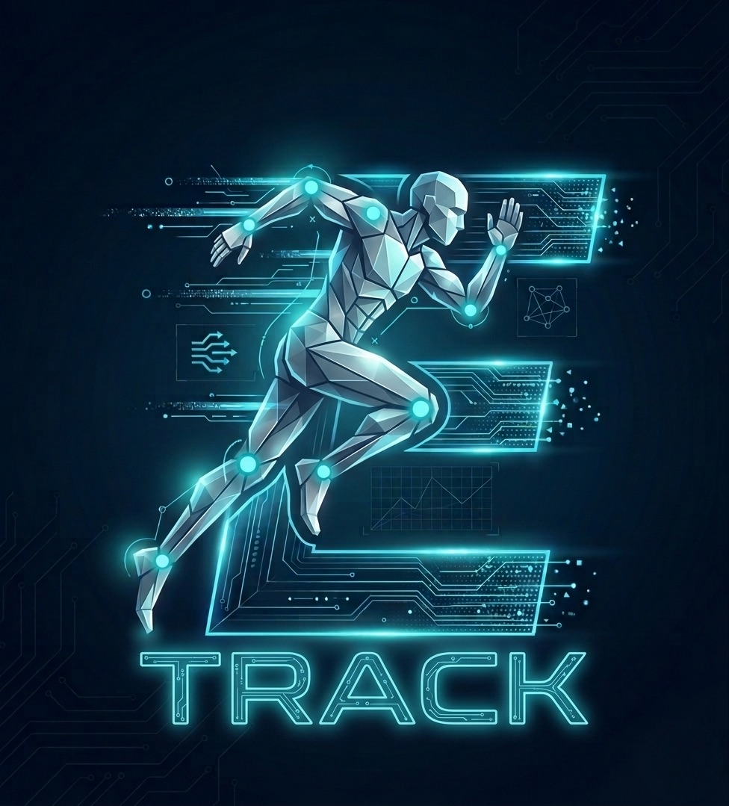

Scientific movement analysis meets digital agility. The new standard for elite-level performance.
Precision through real-time skeletal tracking.
True portability for any training environment.
Data that speaks the language of science.
"Born from the Field, Designed for the Athlete. E-Track is not just another app; it is the culmination of years spent as a Performance Sport Therapist working directly with elite athletes. As a protocol inventor in the field of biomechanics, I realized that the greatest barrier to consistent, high-level improvement was the lack of accessible, objective data. I created E-Track because I refused to settle for 'subjective' assessments. I needed a tool that could follow me anywhere, work without complex logistics, and provide the same level of analytical depth as a million-dollar laboratory. This is the first mechanical transducer for your practice—a pocket biomechanics lab built for professionals who, like me, demand the best for their athletes."